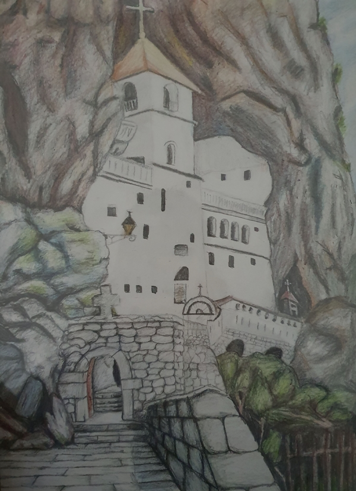

Pjesma napisana za travaricu Vidaricu, publikovana je u herbarijumu Vidarice.
VIDARICA
U daljini joj se pogled lagano gubi,
Izgleda, kao da proplanke nježno ljubi
I Da sve brige u trenu zaboravi,
njeno srce tu u prirodi zasigurno boravi
Snažnog duha i osmjeha pomalo tajanstvenog
Uživa u prizoru mirnom i jedinstvenom.
Na kratko odmara i brzo snagu skuplja,
Da mudrost i predanje rukama u buket okuplja.
laganim korakom niz obalu, a i brdom hodi,
Da ubere sve što bujno procvjeta i rodi
Sve od proljećnog mirisnog divljeg cvijeća
Pa do ukrasa sa jesenjih boja prodnog drveća
Brižno i pažljivo bere obilje tog bilja ljekovitog
Preko tla sjenovitog,kamenitog do trnovitog
Bere bilje kojim priroda nas je darovala,
Svakom travom neku je ranu milovala.
Ljepotu, čistinu, svježinu i lakoću,
Otpornost, jačinu, postojanost i čvrstoću,
Svih tih trava i plodova moć da uvijek očuva
Objedini u buretu u rakiji da ih sačuva.
Naša draga vidarica srcem plemenitim
Pokloni nam piće znanjem nesebičnim
Mirisa, okusa i tradicije vladaricu,
Jednostavnu i posebnu travaricu.